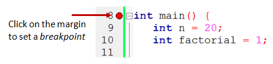
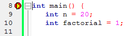
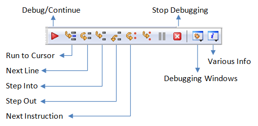
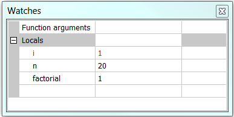

CodeBlocks is an open-source, cross-platform (Windows, Linux, MacOS), and free C/C++ IDE. It supports many compilers, such as GNU GCC (MinGW and Cygwin) and MS Visual C++. It supports interactive debugging (via GNU GDB or MS CDB). CodeBlocks is surprisingly versatile, and in my opinion, much better than the Visual Studio suite. The mother site of CodeBlocks is www.codeblocks.org.
How to Install CodeBlocks 13.12
Step 1: Download
Goto http://www.codeblocks.org/downloads. Click "Download the binary release". Select your operating platform (e.g., Windows 2000/XP/Vista/7). Download the installer with GCC Compiler, e.g., codeblocks-13.12mingw-setup.exe (98 MB) (which includes MinGW's GNU GCC compiler and GNU GDB debugger).
Step 2: Install
Run the downloaded installer. Accept the default options.
Verify the Compiler's and Debugger's Path: (For CodeBlocks 13.12 For Windows) Goto "Settings" menu ⇒ "Compiler..." ⇒ In "Selected Compiler", choose "GNU GCC Compiler" ⇒ Select tab "Toolchain Executables" ⇒ Check the "Compiler's Installation Directory". It shall be set to the "MinGW" sub-directory of the CodeBlocks installation directory, for example, suppose that CodeBlocks is installed in "c:\Program Files\codeblocks", set it to "c:\Program Files\codeblocks\MinGW".
Similarly, check the debugger's path. Goto "Settings" menu ⇒ "Debugger..." ⇒ Expand "GDB/CDB debugger" ⇒ Select "Default" ⇒ In "Executable path", provide the full-path name of "gdb.exe", for example, "c:\Program Files\codeblocks\MinGW\bin\gdb.exe".
Notes For CodeBlocks 13.12 For Windows (Jan 2014)
I encountered problem running debugger with CodeBlocks 13.12 bundled with MinGW (gcc v4.7.1 and gdb 7.5).
I resolved by installing the latast MinGW (gcc 4.8.1, gdb 7.6.1) separately (See "How to install MinGW"), and configured the compiler's and debugger's path to the installed MinGW as in the above step.
Alternatively, consider using Eclipse or Netbeans with Cygwin or MinGW GNU GCC compiler.
Writing C/C++ Programs in CodeBlocks
Read:
- CodeBlocks' Wiki @ http://wiki.codeblocks.org/index.php?title=Main_Page, in particular, "Creating a new project" and "Debug my Program".
Writing Toy Programs (without Creating a Project)
To write toy programs (such as few-line simple programming exercises):
- File ⇒ New ⇒ Empty File.
- Enter (copy and paste) the following codes:
// First C++ program to say Hello #include <iostream> using namespace std; int main() { cout << "Hello, world!" << endl; return 0; }Save the file as "Hello.cpp" in your project directory (e.g., "d:\project"). - Build (Compile and Link): Select "Build" menu ⇒ Build (Ctrl-F9).
- Run: Select "Build" menu ⇒ Run (Ctrl-F10).
The drawback is you cannot debug program without creating a project.
Read "CodeBlocks' Common Errors" if ....
Writing Programs (under Project)
Other than the few-line toy programs, you shall create a project for each of your application. A project contains related files such as source codes, header files, and relevant resources. Also, under CodeBlocks, you can only debug your program under a project - single-file program (in previous section) debugging is not supported.
- File ⇒ New ⇒ Project... ⇒ Console Application ⇒ Go.
- The "Console Application" wizard appears:
- Next
- Select "C++" ⇒ Next.
- In "Project Title", enter "
HelloProject". In "Folder to create project in", set to your working directory, e.g., "d:\project". Accept the default for the rest ⇒ Next.
A project directory "HelloProject" will be created under "d:\project", with a project configuration filename of "HelloProject.cbp". You could later create more projects under this working directory "d:\project". - In "Compiler" field, accept the defaults of "GNU GCC Compiler" ⇒ Finish.
- Under the "Management" pane ⇒ Choose "Projects" tab ⇒ Expand the project node "
HelloProject" ⇒ Expand "Source" node ⇒ Double-click "main.cpp", which is a template program to say "Hello, world!". - To build the program, select "Build" menu ⇒ Build.
- To run the program, select "Build" menu ⇒ Run.
- To create more source file or header file under the project:
- File ⇒ New File... ⇒ Select C/C++ source or C/C++ header.
- C++ ⇒ Next.
- In "Filename with full path" ⇒ Click the "Navigate" (...) button to navigate to the project directory and enter the new file name. Check both the "Debug" and "Release" boxes (or "All") ⇒ Finish.
Set Active Project
You can create more projects. However, the "Build" and "Run" commands are always apply to the active project, which is shown in bold. To activate a project: right-click on the project name ⇒ "Activate Project".
Open an Existing Project
To open an existing project, either:
- From "File" menu ⇒ "Recent Projects" ⇒ Choose the desired project; or
- From "File" menu ⇒ "Open..." ⇒ Navigate to your project directory ⇒ Choose "
ProjectName.cbp", where ".cbp" stands for CodeBlocks-Project.
Read "CodeBlocks' Common Errors" if ....
Writing Many Toy Programs under ONE Project
Although a project may contain many source files, there can only be one main() function among all the source files. That is, you cannot keep two toy programs (each having a main() function) in one project (you will get the error "multiple definition of 'main'" when you try to build the project).
You need to create one project for each toy program. This is clumsy!
Codeblock, nonetheless, allow you to add files or remove files from a project. The removed files are not deleted and remain in the folder. We could use this feature to write many toy programs under one project. The procedures are as follows:
- Create a C/C++ project called "ToyProgramProject" (read previous section on how to create a project). You shall get a "
main.cpp" automatically. - Write your toy program on "
main.cpp". Build and run the program. - To write another program: select "File" ⇒ "Save File as" ⇒ enter a program name such as "
myfirst.cpp". Remove it from the project (because each project can only have one file withmain()), by right-click on "myfirst.cpp" ⇒ "remove file from project". - Continue to write your second toy program on "
main.cpp". Build and run. - Repeat Step 3 and 4 for another toy program.
- Suppose that you wish to run "
myfirst.cpp" again: First remove "main.cpp" from the project. Right-click on the project ⇒ Add File... ⇒ Choose "myfirst.cpp" ⇒ Open ⇒ Check both the "Debug" and "Release" box ⇒ OK. You can now build and run the "myfirst.cpp".
In brief, use the "Add File" and "Remove File" to place your desired toy program file (with the main() function) under the active project. You can then "Build" the project and "Run" your toy program.
CodeBlocks' Common Errors
Cannot Compile any C/C++ Program after Installing CodeBlocks
Check:
- You downloaded the CodeBlocks with "MinGW GNU C/C++ Compiler" (e.g., "
codeblocks-10.05mingw-setup.exe"). - Goto "Settings" menu ⇒ "Compiler..." ⇒ Select tab "Toolchain Executables" ⇒ Check the "Compiler's Installation Directory". It shall be set to the "MinGW" sub-directory of the CodeBlocks installation directory, e.g., "
c:\Program Files\codeblocks\MinGW" suppose that CodeBlocks is installed in "c:\Program Files\codeblocks".
Cannot Build or Run Program - Build/Run Buttons and Menu-Items are Grey and Not Selectable
A previous program is still running. You need to terminate the program by closing the output console window.
Error: undefined reference to `WinMain@16'
Check that you have a main() function in your function. Check your spelling of main!
(For C Programs) System Error: "xxx.exe has stopped working"
Check your scanf() function. You probably omitted the '&' before the variable name.
Debugging C/C++ Program in CodeBlocks
Able to use a graphics debugger to debug program is crucial in programming. It could save you countless of hours guessing on what went wrong.
Step 0: Write a C++ Program
Follow the steps in "Writing C++ Program (with Project)" to write the following C++ program, to be used for the debugging practice. This program computes and prints the factorial of n (=1*2*3*...*n). The program, however, has a logical error and produce a wrong answer for n=20. (It outputs "The Factorial of 20 is -2102132736" - a negative number?!).
1 2 3 4 5 6 7 8 9 10 11 12 13 14 15 16 17 18 19 |
/* * Compute the factorial of n, with n=20. * n! = 1*2*3*...*n */ #include <iostream> using namespace std; int main() { int n = 20; // To compute factorial of n int factorial = 1; // Initialize the product to 1 int i = 1; while (i <= n) { factorial = factorial * i; i++; } cout << "The Factorial of " << n << " is " << factorial << endl; return 0; } |
Run the program and observe the output produced:
The Factorial of 20 is -2102132736
Let's use the graphic debugger to debug the program.
Step 1: Set an Initial Breakpoint
Set an initial breakpoint at main() function by clicking on the "left-margin" (right-side of the line number) of the line containing main(). A red circle appears indicating a breakpoint has been set at that line. A breakpoint suspends program execution for you to examine the internal states.
Step 2: Start Debugging
From "Debug" menu, select "Start (F8)". The program begins execution but suspends its execution at the breakpoint, i.e., main(). An yellow arrow (as shown in the diagram) appears and points at the main(), indicating this is the next statement to be executed.
Step 3: Single-Step and Watch the Variables and Outputs
 Click the "Debugging Windows" button on the "Debug" toolbar and select "Watches" to enable the "Watch" pane. (You could also do it from the "Debug" menu.)
Click the "Next line" button on the "Debug" toolbar to single-step thru your program. At each of the step, you could examine the internal state of your program, such as the value of the variables (in the "Watches" pane), the outputs produced by your program (in the console), etc.
Single-stepping thru the program and watching the values of the variables and the outputs produced is the ultimate mean in debugging programs - because it is exactly how the computer runs your program!
Step 4: Breakpoint, Run-To-Cursor, Continue and Stop
As mentioned, a breakpoint suspends program execution and let you examine the internal states of the program. To set a breakpoint on a particular line, click the left-margin of that line (or select "Toggle Breakpoint (F5)" from "Debug" menu).
The "Continue" resumes the program execution, up to the next breakpoint, or till the end of the program.
Single-stepping thru a loop with a large count is time-consuming. You could set a breakpoint at the statement immediately outside the loop (e.g., Line 12 of the above program), and issue "Continue" to complete the loop.
Alternatively, you can place the cursor on a particular line, right-click and select "Run-To-Cursor" to resume execution up to this line.
The "Stop" ends the debugging session. Always terminate your current debugging session using "Stop" or "Continue" till the end of the program.
Important: I can's stress more that mastering the use of debugger is crucial in programming. Explore the features provided by the debuggers.
Other Debugging Features
Step-Into and Step-Out: To debug a function, you need to use "Step-Into" to step into the first statement of the function. ("Step-Over" runs the function in a single step without stepping through the statements inside the function.) You could use "Step-Out" to return to the caller, anywhere within the function. Alternatively, you can set a breakpoint inside a function.
Watching a Variable: To add a variable into the "Watches" panel, goto "Debug" ⇒ "Edit Watch..." ⇒ "Add" ⇒ Enter the variable name ⇒ You can select the format, or "watch as array".
Tips and Tweaks
- Re-format Source Code: Right-click on the source file ⇒ Format this file (AStyle). [Source formatting feature is provided by a plugin called AStyle, which can be accessed via menu "Plugins" ⇒ "Source Code Formatter (AStyle)". To configure the formatting styles, goto "Settings" ⇒ "Editor..." ⇒ "Source Formatter".]
- Auto-Complete: type the initial letters of a keyword/identifier and press Ctrl-space to list the available options.
- Abbreviation: e.g., type "for" and press control-J to get the skeleton of for-loop. The abbreviation list can be configured in "Settings" menu ⇒ "Editor..." ⇒ "Abbreviations".
- Zoom in/out on Editor Panel: Either:
- From "Edit" menu ⇒ "Special Commands" ⇒ "Zoom" ⇒ "In", "Out", or "Reset", or
- Hold the control key and zoom in/out via the mouse scroll wheel, or
- Use keyboard shortcut: control number-pad + (zoom in), control number-pad / (zoom out).
- Configure Editor: Right-click on the editor panel ⇒ "Configure editor...".
- Source Formatter: You can choose the "Java" style.
- [TODO] more
- [How to link to API documentation?]
REFERENCES & RESOURCES
- CodeBlocks Mother Site @ http://www.codeblocks.org/.
- CodeBlocks' Wiki @ http://wiki.codeblocks.org/index.php?title=Main_Page.
- CodeBlocks' User Manual @ http://www.codeblocks.org/user-manual.